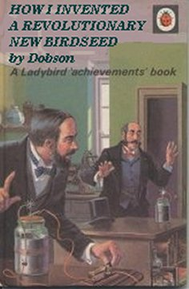

Wednesday, March the 24th, 2004
back to: title, date or indexes
On Friday 12th March we referred to Dobson's short-lived contract with Ladybird Books, which saw the publication of just one work. It has long been argued, by the indefatigable Dobson scholar Jasper Poxhaven, that a second book was planned, and—more controversially—that dust-jackets were printed for the new title so that it could be included in Ladybird's 1960 catalogue. When Dobson failed to deliver his manuscript, says Poxhaven, the proposal was quietly dropped, an erratum slip was inserted into the catalogues, and the dust-jackets were torn up and donated to the Pang Hill Orphanage for use in pâpier maché projects. All traces of the book were then lost, and it became one of the so-called “Phantom Dobsons”, those much-discussed works of which there appear to be hints and vestiges in the documentary record, yet which elude even the Poxhavens of this world.*
Last week, however, while taking a cigarette break, the same Poxhaven was caught in a downpour and took shelter in a derelict kiosk abutting the Port of Tongs flag-and-pennant warehouse. The scholar was astonished to see, pasted to the crumbling wall of the kiosk with proprietary paste, a copy of the lost Dobson dust-jacket. Gingerly, he unpeeled it from the wall, put it in his satchel, and cycled furiously to the Dobson Building, where it is now on temporary display next to a pile of towels in the laundry room.

* NOTE : Aloysius Nestingbird has compared the “Phantom Dobsons” to the Sherlock Holmes cases which Dr Watson mentions in passing, but which were never written up as part of the canon. Three of these in particular hold me spellbound: “the case of the bogus laundry”, alluded to in The Adventure Of The Cardboard Box, “the singular affair of the aluminium crutch” noted in The Adventure Of The Musgrave Ritual, and, best of all, the magnificent case of “the politician, the lighthouse, and the trained cormorant” in The Adventure Of The Veiled Lodger.